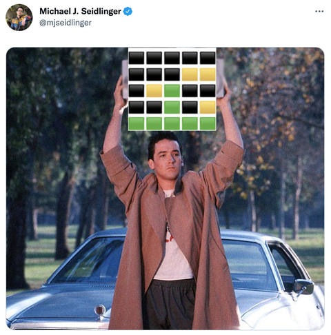

Memes have come a long way since the creation of the internet
Did you laught? Boomer.
Memes started as a funny or relatable picture, which was usually captioned humorously
Unfortunately,
Memes have "evolved", leading to them becoming more random and only funny to certain audiences
Memes today are like in-depth sport conversations. Someone who doesn't watch football obsessively will not enjoy a deep conversation about niche rules. Similarly, memes today require large amounts of prior meme knowledge, and a knowledge of nearly infinite cultural references.

Do you see what I mean?
There is one more type of meme, which is not to be had among respectable memers
Enter, the facebook memes
The prime example of facebook crime is the minion meme
I nearly lost my life getting these memes
In conclusion, the internet is not kind to outsiders